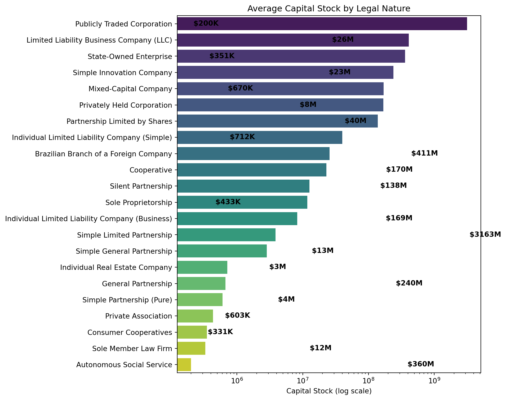

Code
companies_data = pd.read_csv("./data/companies.csv")companies_data = pd.read_csv("./data/companies.csv")These two piles of code do the same thing
companies_data.loc[:, 'company_size'].value_counts()company_size
micro-enterprise 66202
other 42520
small-enterprise 32610
Name: count, dtype: int64companies_data.groupby('company_size')['company_id'].count()company_size
micro-enterprise 66202
other 42520
small-enterprise 32610
Name: company_id, dtype: int64legal_nature_avg_stock = (
companies_data
.groupby("legal_nature")["capital_stock"]
.mean()
)
legal_nature_total_stock = (
companies_data
.groupby("legal_nature")["capital_stock"]
.sum()
)plt.figure(figsize=(10, 8))
# ive seen people use a generic name like plot_data
# in their cells where they're just plotting a graph based on
# dataframes/series in pandas
# they're propbably creating a new variable so that they can mess around with it
# without breaking the original 'sources of truth' (variables)
plot_data = legal_nature_avg_stock.sort_values(ascending=False)
# sns.barplot(data=legal_nature_avg_stock)
avg_stock_plot = sns.barplot(
x=plot_data.values,
y=plot_data.index,
palette="viridis", # pretty gradient
)
plt.xscale("log")
for i, v in enumerate(legal_nature_avg_stock.values):
# so, apparently, in python you can just put underscores to make numbers more readable
# very cool very nice
label = f"${v / 1_000_000:.0f}M" if v > 1_000_000 else f"${v / 1_000:.0f}K"
# Place text slightly to the right of the bar end
avg_stock_plot.text(
x=v, # since v is the value/length of the bar, this will put text at the tip of the bar
y=i, # in a barplot, the bars are the fixed coordinates (integer row)
s=" " + label, # the str of what to show; the label + left margin of one space
verticalalignment="center", # the middle of the text sits on the y-line
fontweight="bold",
)
plt.xlabel("Capital Stock (log scale)")
plt.ylabel("")
plt.title("Average Capital Stock by Legal Nature")
plt.tight_layout()
plt.show()C:\Users\DanIs\AppData\Local\Temp\ipykernel_35548\551034253.py:11: FutureWarning:
Passing `palette` without assigning `hue` is deprecated and will be removed in v0.14.0. Assign the `y` variable to `hue` and set `legend=False` for the same effect.
avg_stock_plot = sns.barplot(
From this chart we can see that Publicly Traded Corporations make by far the most amount of money on average, with